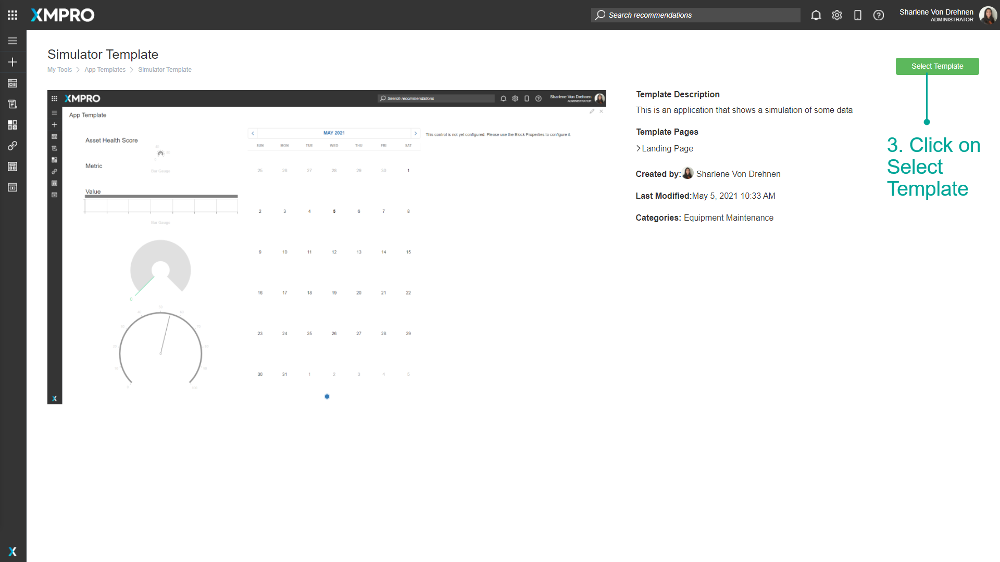
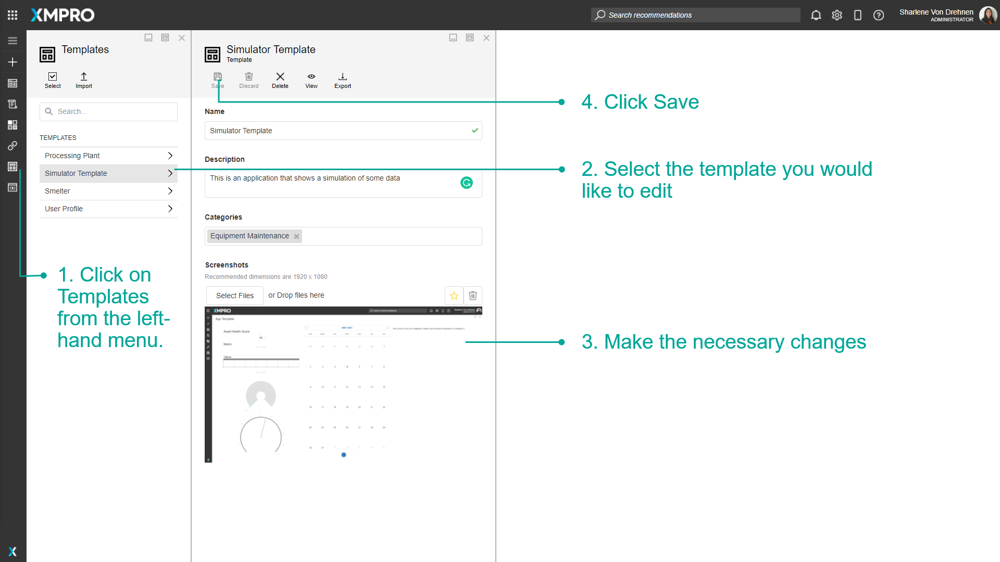
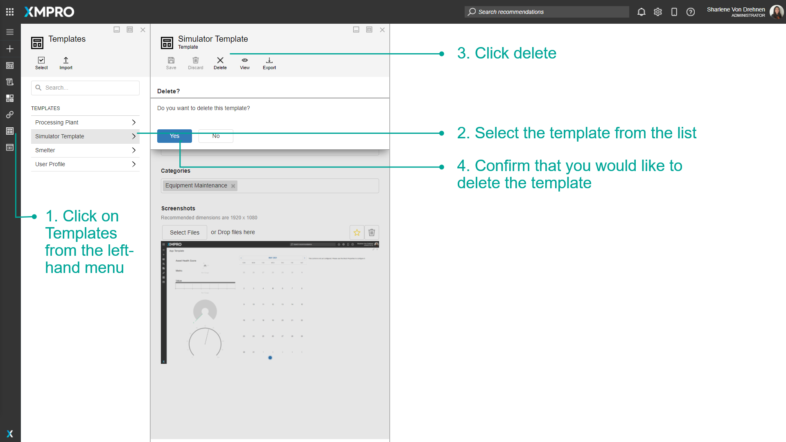
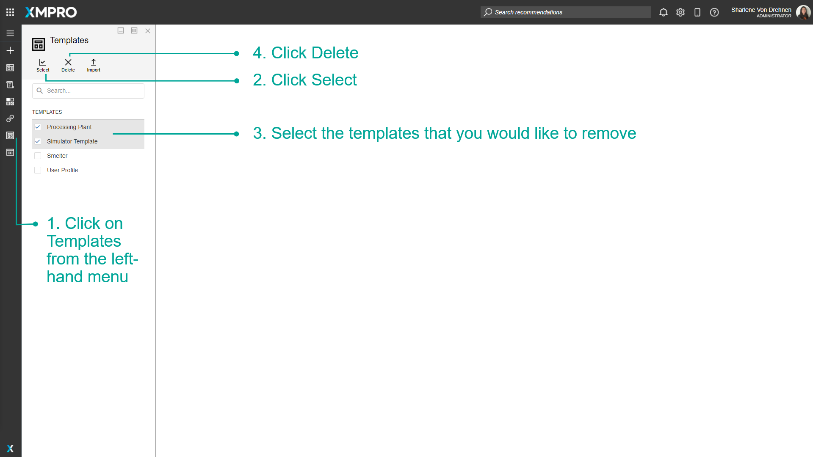

Manage Templates
Templates are pre-designed Applications that can be selected when creating a new Application. Templates can be used to save time without having to build a whole new App layout from scratch, and also allow you to create a consistent theme or design that you can use across all your Applications.
Note
It is recommended that you read the article listed below to improve your understanding of Templates.
Creating a Template
To create a Template, make sure you already have an App that you want to use to save as a Template. Follow the steps below to create a template out of an existing App.
- Click on Applications from the left-hand menu.
- Click on the edit button of the application from the list.

- Click on Save Template.
- Enter the name, description, and category of the Template.
- Upload screenshots of what the Application looks like.
- Click on Save.

Note
Adding screenshots helps other users when they want to have a look at the Template to understand what the Template contains.
Using a Template
When creating an App, you can choose a Template as a base instead of starting the App from scratch. To use a Template:
- Click on the plus from the left-hand menu to create a new Application.
- Choose the template you would like to use.
- Click on Select Template.

- Continue creating the new Application.
- Click Save.

Editing a Template
A list of existing Templates can be viewed on the Templates page from the left-hand menu. This is where you can make changes to Templates, delete Templates, view, import, or export them.
- Click on Templates from the left-hand menu.
- Select the Template you would like to edit.
- Make the necessary changes.
- Click Save.

Deleting Templates
Single Template
To remove a single Template, follow the steps below:
- Open the Templates page from the left-hand menu.
- Select the Template from the list.
- Click Delete.
- Confirm that you would like to delete the Template.

Multiple Templates
To remove multiple Templates at the same time, follow the steps below:
- Open the Templates page from the left-hand menu.
- Click Select.
- Select the Templates that you would like to remove.
- Click Delete.

- Confirm that you would like to delete the Templates selected.
Last modified: December 05, 2025